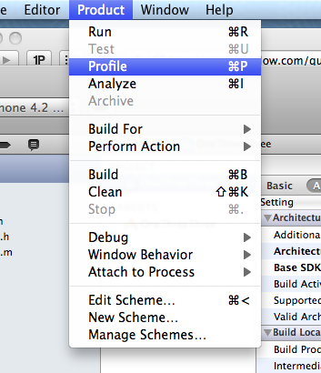

Xcode 4 - "Archive" is greyed out?
I would like to archive my application, but the Archive option is greyed out. What could cause this?

Answer
You have to select the device in the schemes menu in the top left where you used to select between simulator/device. It won’t let you archive a build for the simulator.
Or you may find that if the iOS device is already selected the archive box isn’t selected when you choose “Edit Schemes” => “Build”.
Suggest
see the picture. but I have to type enough chars to post the picture.:)